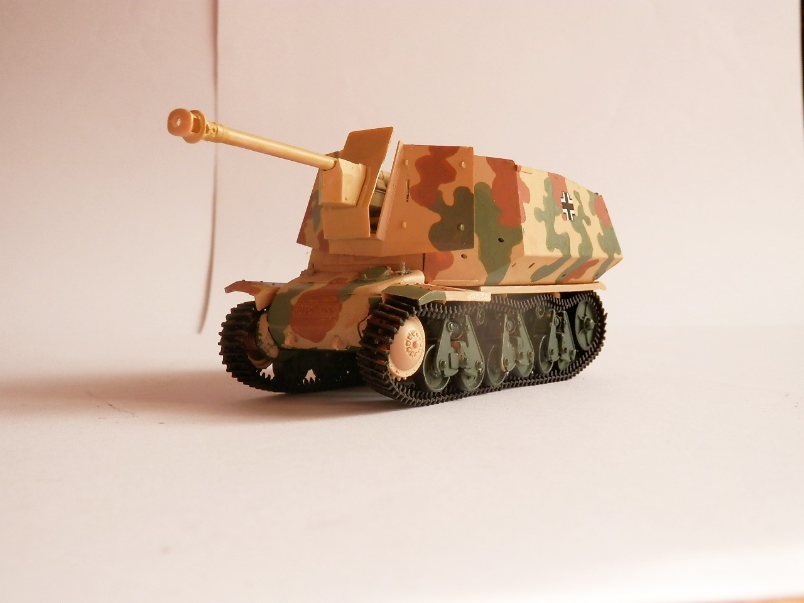
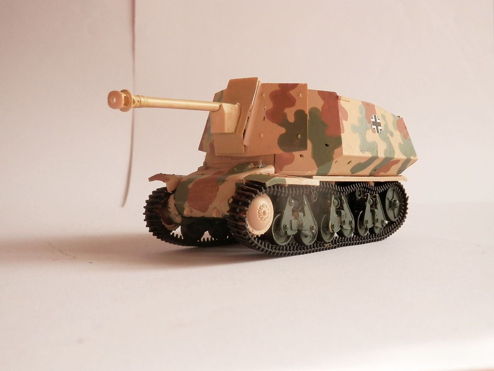
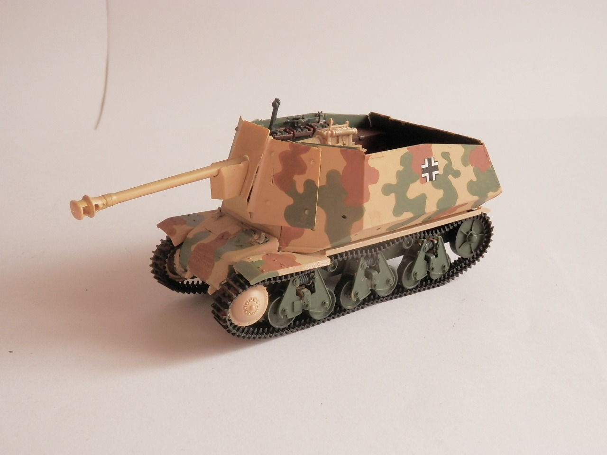
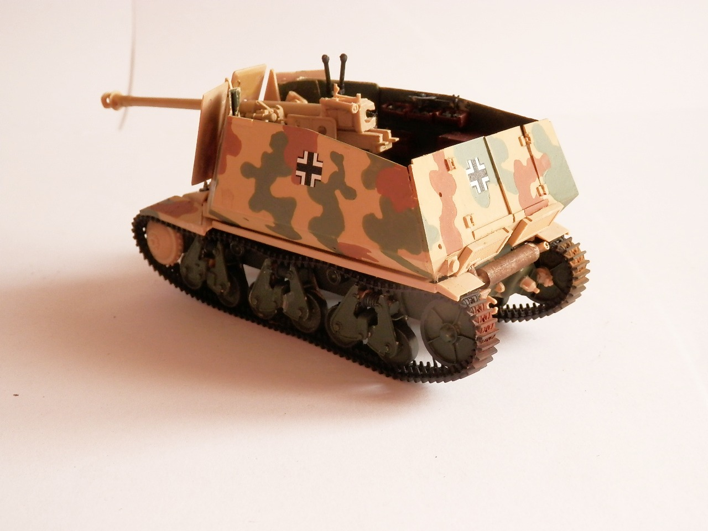
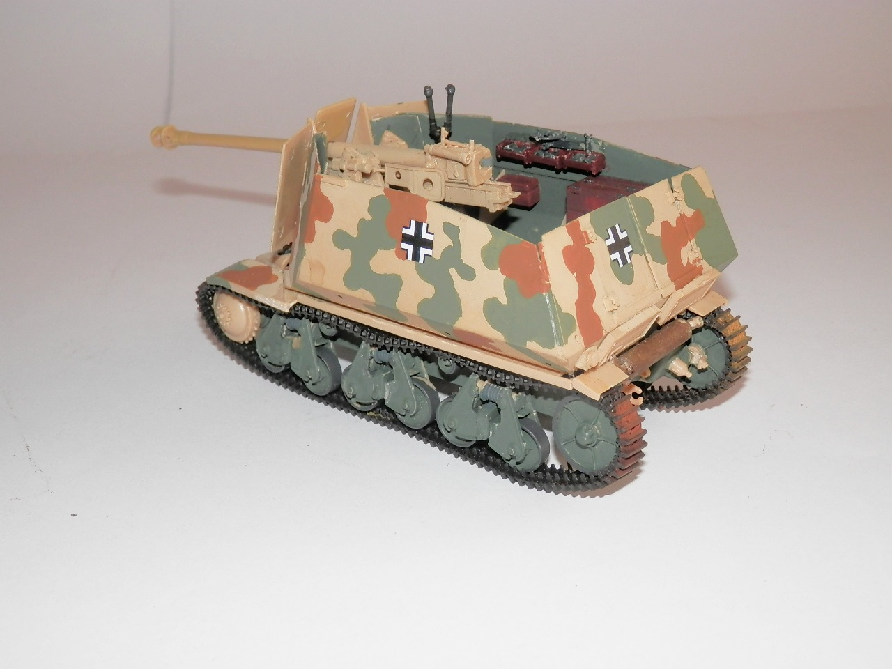
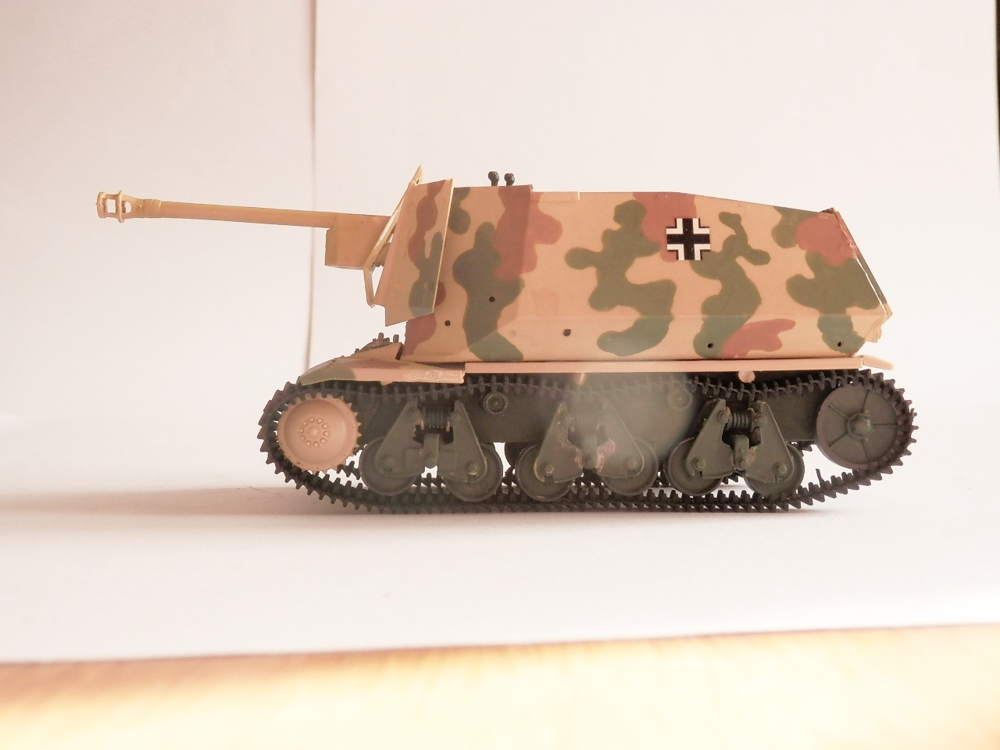

Mezzi militari · scale model archive
German Panzerjager 39(H) mit 7.5cm Pak40/1 Marder
German Panzerjager 39(H) mit 7.5cm Pak40/1 Marder — Kit: Trumpeter, Scale: 1/35. Needs quite some weathering...

Photo gallery





English description
Needs quite some weathering...
Descrizione italiana
Ha bisogno di parecchio invecchiamento...